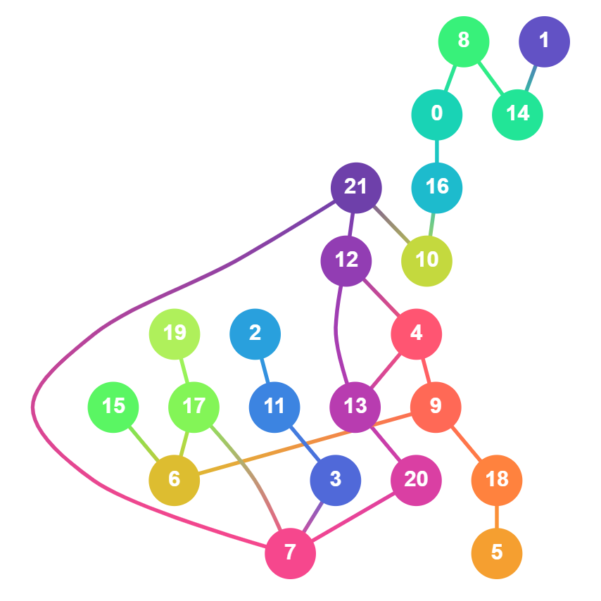

Create a decrossing operator that minimizes the number of decrossings
heuristically by looking at each pair of layers. This method is very fast and very general and pften produces good results. It is also highly customizable, and can be parametrized by any two layer operator.
Create a decrossing operator that minimizes the number of decrossings heuristically by looking at each pair of layers. This method is very fast and very general and pften produces good results. It is also highly customizable, and can be parametrized by any two layer operator.
Create a new TwoLayerOperator with twoLayer.
